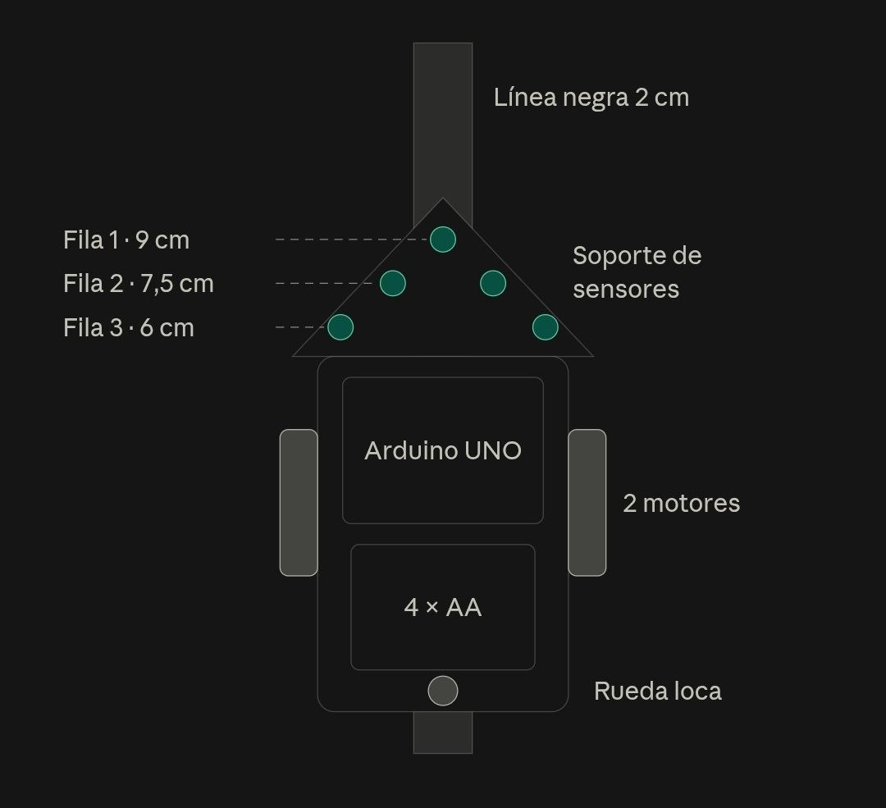
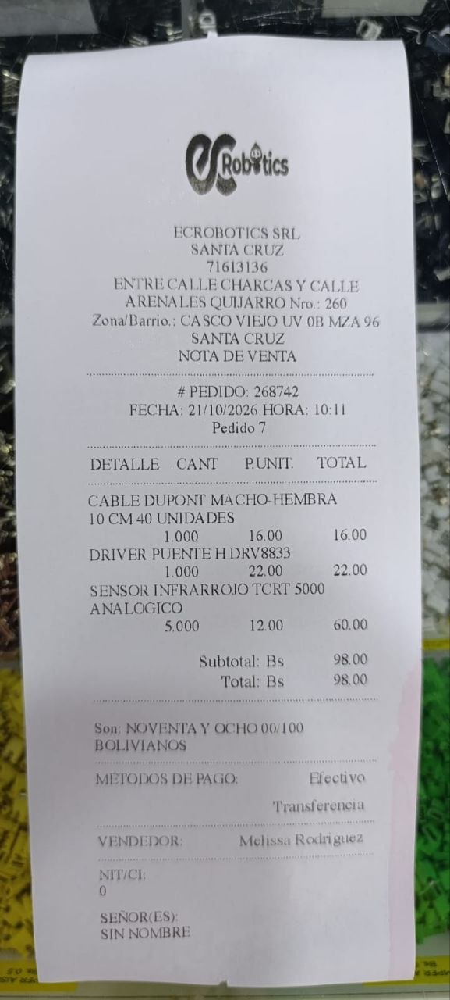
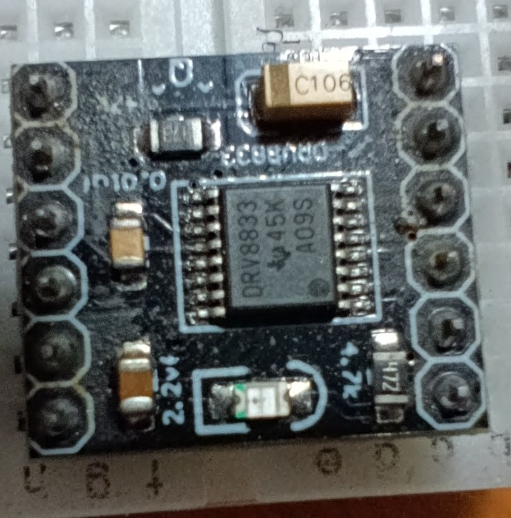
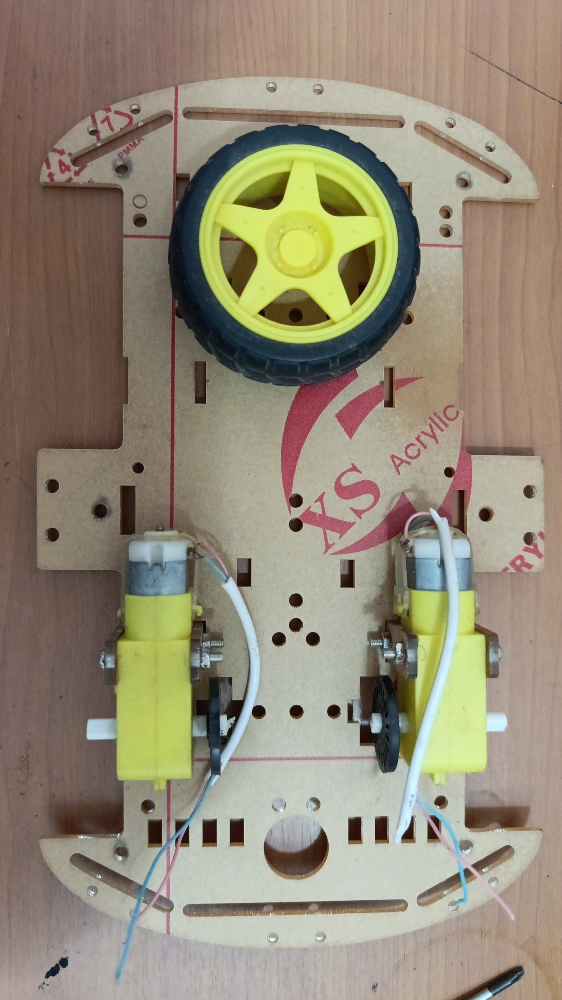
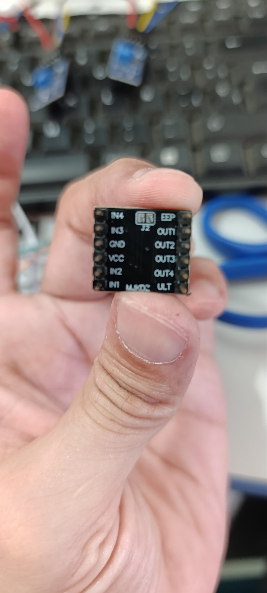

Arturito
Un carrito que sigue líneas negras, armado y programado por tres estudiantes de primaria del colegio Jaime Alfonso Escalante Gutierrez A, en Santa Cruz de la Sierra.
Haz click sobre el Arturito que anda por la página para encenderlo: recorre la línea usando sus sensores, igual que el robot de verdad. Si lo arrastras y lo sueltas fuera de la pista, verás cómo la busca. Otro click y se apaga.
El equipo
Tres cursos distintos y un solo carrito.


El robot
Arturito lee la línea con cinco sensores infrarrojos TCRT5000 en punta en la parte delantera. Un Arduino UNO decide hacia dónde girar y dos motores reductores amarillos lo empujan. Lo alimentan cuatro pilas AA y el interruptor de encendido se ve a simple vista, como pide el reglamento.
- Arduino UNO
- 5 sensores TCRT5000
- Driver dual de motores
- 2 motoreductores 1:48
- 4 pilas AA
- Menos de 25 × 30 cm

El concurso
Arturito corre en la categoría seguidor de línea amateur del 1.er Concurso Distrital de Robótica 2026, que organiza la Dirección Distrital de Educación Santa Cruz 1.
- Sábado 31 de octubre de 2026, de 9:00 a 13:00 (acreditación de 7:30 a 8:30).
- Colegio Internacional San Marcos, Santa Cruz de la Sierra.
- Pista de línea negra de 2 cm sobre fondo blanco, de 10 a 30 metros, con curvas de 90° o más abiertas, cruces y bifurcaciones.
- Dos minutos para completar el recorrido. Cada robot corre dos o tres rondas y cuenta el mejor tiempo.
- Si el robot se sale de la línea, tiene que reingresar a menos de 30 cm de donde se perdió. Los atajos no valen.
Premios
La organización va actualizando la lista de premios en una hoja de cálculo. Vale la pena mirarla cada tanto, porque todavía están sumando cosas: premios del concurso.
Así lo armamos






